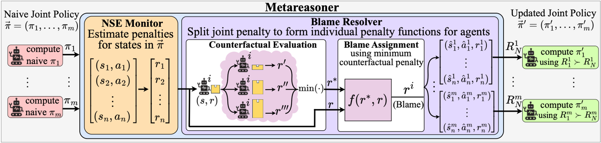
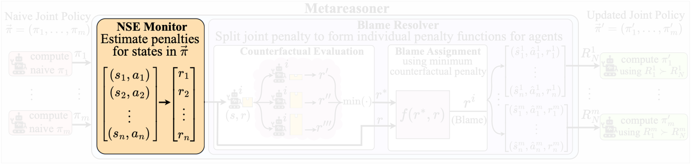
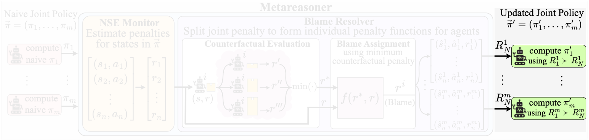

Approach Overview.

Agents independently compute policies to complete assigned tasks described by \(R_1^i\), ignoring presence of any negative side effects (called Naive policy).

The NSE Monitor computes the NSE penalty for the naive joint policy \(\vec{\pi}\).

The Blame Resolver assigns a blame value for each agent, by evaluating counterfactual scenarios specific to each agent, as illustrated with warehouse robots handling different-sized boxes. Individual penalty functions \(R^i_N\) are derived for each agent, based on the estimate blame.
